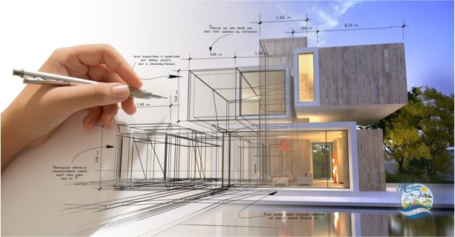
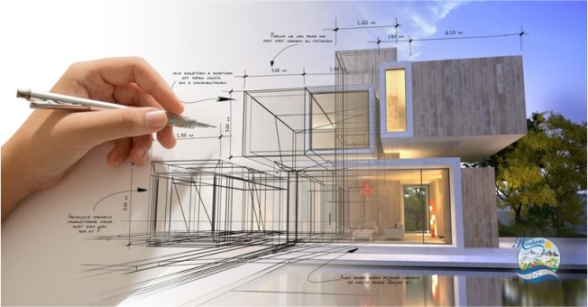
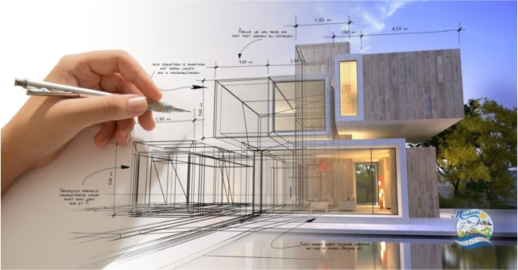

La estructura de la arquitectura y las funciones que tiene

¿Cual es su Historia?
El primer tratado sobre saberes arquitectónicos proviene del siglo I a.C. y se trata de Architectura del romano Vitruvio. Sin embargo, el empeño por fabricar estructuras y ambientes hermosos, útiles y duraderos precede con creces a dicha época de la humanidad. Las grandes obras de las culturas antiguas que hoy en día sorprenden por su hechura, como las pirámides de Egipto, las ciudades de piedra mesoamericanas, los templos de la antigüedad grecorromana o los habitáculos cristianos de Capadocia, son apenas algunas pruebas de ello.
La arquitectura antigua, medieval y moderna exhibe los métodos y tendencias estéticas de las distintas culturas que le dieron origen. Por ejemplo, la arquitectura medieval europea trasluce el dominio de la religión cristiana y el oscurantismo, mientras que la renacentista deja ver el empeño renovador y rupturista que predominó en la época.
Posteriormente, con la llegada de la industrialización y el descubrimiento de nuevos materiales, la arquitectura daría un salto enorme hacia adelante y se nutriría de nuevos saberes y tecnologías, lo cual daría durante el siglo XX inicio a una verdadera explosión urbana y arquitectónica a lo largo y ancho del mundo, y a la aparición de estilos totalmente originales de arquitectura, desvinculados con la tradición y el patrimonio construido.
Que es Arquitectura:
Como arquitectura se denomina el arte de idear, diseñar y construir edificios y estructuras donde se puedan desenvolver las actividades humanas, y que, a la vez, sean funcionales, perdurables y estéticamente valiosos. La palabra, como tal, proviene del latín architectūra.
En este sentido, la arquitectura es una disciplina que se rige por un conjunto de principios técnicos y estéticos, donde la belleza de la construcción debe encontrarse en equilibrio armónico con su funcionalidad y utilidad. De allí que se diga que la arquitectura suponga la alteración del espacio físico para la satisfacción de las necesidades humanas de vivienda, trabajo, industria, comercio, religión, etc.
Principales Funciones de la Arquitectura
1). Definir los objetivos, requerimientos y el presupuesto de un proyecto arquitectónico o de construcción
2). Coordinar a otros profesionales en el diseño, proyecto y construcción de un ambiente o espacio
3). Preparar y presentar reportes e informes sobre las características del diseño al cliente
 
